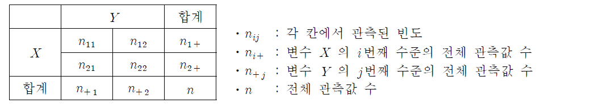
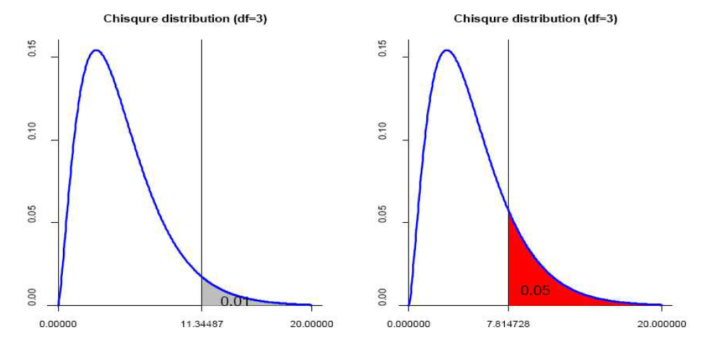
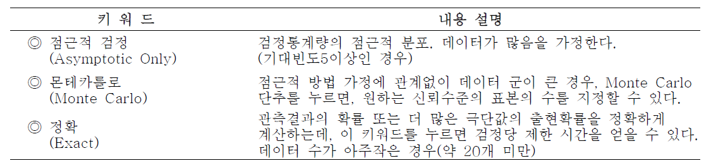
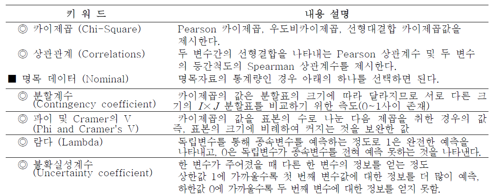
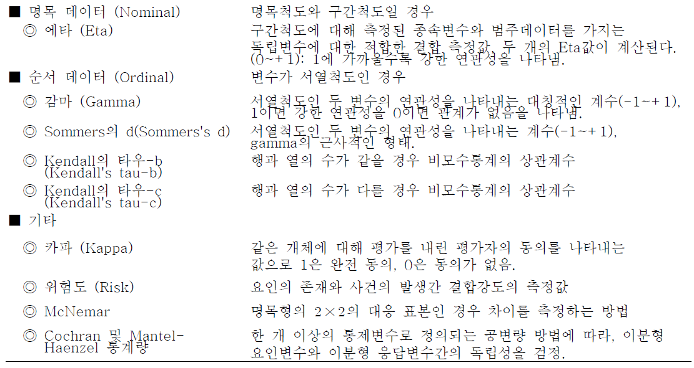
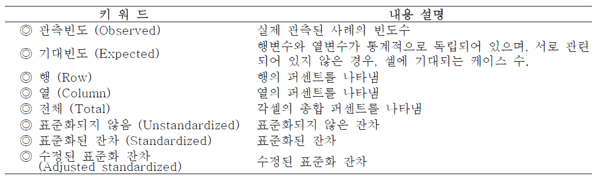
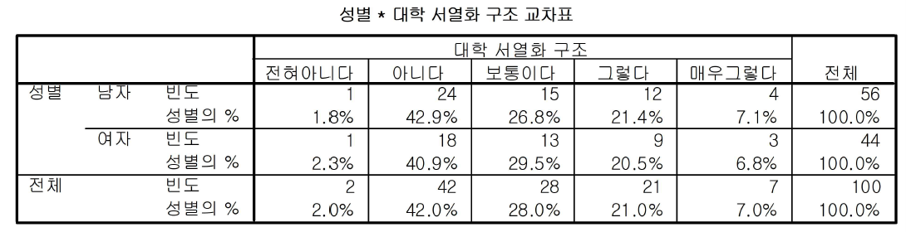
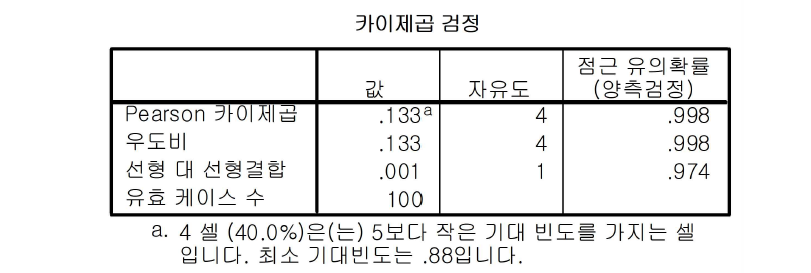
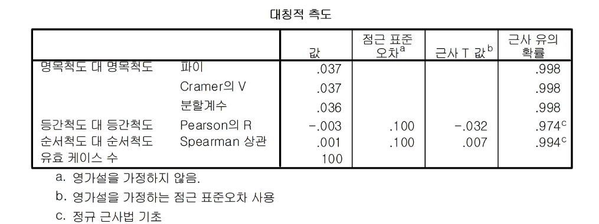

Chapter 7 교차분석
범주형 자료는 반응범주에서 관측되는 빈도(frequency)로 이루어져 있다. 두 개의 범주형 변수를 가지고 있는 자료의 경우 각각의 변수를 \(X\)와 \(Y\)로 표시하고, \(X\)는 \(I\)개의 수준과 \(Y\)는 \(J\)개의 수준을 갖고 있다고 하자. 그러면, \(IJ\)개의 모든 가능한 결과를 변수 \(X\)의 범주를 \(I\)개의 행과 변수 \(Y\)의 범주를 \(J\)개의 열로 나타내는 직사각형 표로 정리할 수 있다. 이 표의 각 칸(cell)은 \(IJ\)개의 가능한 결과를 나타내는데, 이 결과의 빈도를 각 칸에 정리한 표를 분할표(contingency table)라고 한다. 두 개의 변수만을 분류한 분할표를 이차원 분할표(two-way table), 세 변수를 분류한 것을 삼차원 분할표(three-way table)라고 한다. 네 개 이상의 변수에 대해서도 같은 방법으로 고차원 분할표를 정의할 수 있다. \(I\)개의 행과 \(J\)개의 열을 갖는 이차원 분할표를 \(I\times J\)분할표라고 한다. 이는 다음과 같이 표현 가능하다.

범주형 자료분석의 하나인 교차분석은 연구자가 복잡한 자료를 상황표로 만들어서, 변수 사이의 상관관계를 파악할 수 있는 분석이다. 교차분석에서 두 변수가 상호 독립적인지 아니면 관련성이 있는지를 분석하는 것이 \(\chi^2\)(카이제곱)검정이다. \(\chi^2\)검정은 각 칸확률이 어떤 고정된 확률값 {\(\pi_{ij}=\pi_{i+}\pi_{+j}\)}와 같다는 귀무가설 (\(H_0\))를 검정하는 형태로 독립성 검정을 실시한다.
칸빈도가 {\(n_{ij}\)}이고 전체 표본크기가 \(n\)인 표본에서 {\(\mu_{ij}=n\pi_{ij}\)}를 기대빈도라고 한다. 이것은 귀무가설이 참일 때의 기댓값 {\(E(n_{ij})\)}를 나타낸다.
동전을 \(n\)번 던지는 실험을 생각해 보자. 동전의 앞면이 나올 확률을 \(\pi\)라고 하고 뒷면이 나올 확률을 \(1-\pi\)라고 하자. 이 동전의 앞면과 뒷면이 나올 확률이 동일하다는 귀무가설은 \(\pi=1-\pi=0.5\) 이다. 이 때 앞면의 기대빈도는 \(\mu=n\pi=n/2\) 이며 이것은 또한 뒷면의 기대빈도와 일치한다.
관측된 자료가 \(H_0\)과 모순이 되는지 알아보기 위하여 표본칸빈도와 기대칸빈도를 비교해보자. 이차원 분할표에서 \(H-0\)이 참이라면 \(n_{ij}\)는 각 칸의 \(\mu_{ij}\)에 가까운 값을 가져야 하므로 표본칸빈도와 기대칸빈도의 차이(\(n_{ij}-\mu_{ij}\))가 클수록 \(H_0\)을 기각할 수 있는 근거가 커지게 된다. 이러한 비교를 위해 사용하는 검정통계량은 대표본카이제곱분포를 따른다.
- 카이제곱 통계량 계산
: 카이제곱 통계량은 실제의 자료에서 얻은 관찰빈도와 기대빈도의 차이를 비교함으로써, 즉 주어진 관찰빈도가 기대빈도에 얼마나 가까운지를 봄으로써 귀무가설을 검증하게 된다.
\[ \chi^2 =\sum_{i=1}^I\sum_{j=1}^J \frac{(n_{ij}-\mu_{ij})^2}{\mu_{ij}}, \quad df=(I-1)\times(J-1) \] 카이제곱 통계량을 보면 관찰빈도와 기대빈도의 차이가 커질수록 통계량이 커진다는 것을 알 수 있다. 두 빈도의 차이가 커진다는 것은 두 변수가 독립이지 않아 분할표 에서의 각 칸확률이 두 변수의 각 수준의 곱으로 나타나지 않는다고 판단할 수 있다. 아래의 그림은 카이제곱분포에서 카이제곱통계량의 증감에 따른 유의확률을 보여주고 있다.

그림에서 자유도가 3인 카이제곱분포에서 검정통계량이 약 11.345인 경우 유의확률은 0.01이고, 검정통계량이 약 7.815인 경우의 유의확률은 0.05가 됨을 알 수 있다.
7.1 가설 검정
사교육 실태 및 의식 조사에서 성별에 따라 대학 서열화 구조에 대한 차이가 있는지를 알아보기 위한 카이제곱 검정의 가설은 다음과 같다.
\(H_0\): 성별에 따라 대학 서열화 구조에 대한 의식에 차이가 없다.
\(H_1\): 성별에 따라 대학 서열화 구조에 대한 의식에 차이가 있다.
여기서 귀무가설은 두 변수간의 관계가 독립적이라는 의미이고, 대립가설은 두 변수간의 관계가 독립적이지 않고 어떤 관계가 있음을 의미한다. 카이제곱 검정은 단지 두 변수가 독립적인지 아닌지만 알 수 있을 뿐 구체적으로 어떤 관계가 있는지는 알 수 없다.
\(\chi^2\)통계량과 자유도와 유의수준을 이용하여 \(\chi^2\)분포표를 찾아 \(\chi^2\)임계값을 가지고 비교하여 \(\chi^2\)통계량이 임계값보다 크면, 두 변수가 독립이라는 귀무가설을 기각하고, \(\chi^2\)통계량이 임계값보다 작으면 귀무가설을 채택하는데 이는 두 집단간에 차이가 없다(독립적)는 의미이다.
7.2 분석 절차
사교육 실태 및 의식에 관한 조사자료 중 대학 서열화 구조(j3)와 성별(gender)에 대한 결과를 쉽게 이해하기 위해 분석표를 작성하고자 할 때 다음과 같은 과정으로 교차분석을 실행한다.
분석(A)
기술통계량(E)
교차분석(C)연구자가 대학 서열화 구조(j3)과 성별이 서로 연관되어 있는지 여부를 알아보기 위해, 화면 우측에서 행(Row)에 성별을 지정하고, 열(Column)에 대학 서열화 구조(j3)를 지정한다. 아래에 정확한 검정(Exact) 통계량(Statistics), 셀(Cell), 형식(Format)이 있는데, 이는 각각 다음과 같다.
- 정확한 검정

- 통계량
 
- 셀 형식 표기 
[결과] 
각 셀의 통계수치는 빈도수, 행 백분율이다. 각 행의 오른쪽 끝에는 성별에 대한 각 그룹별 합계가 제시되며, 각 열의 최 하단에는 대학 서열화 구조에 대한 그룹별 합계가 제시된다. 예를 들어, 표의 첫 번째 셀을 보면, “남자”이면서, 대학 서열화 구조 측면에서 “전혀 아니다”라고 답한 사람은 1명이다. 이는 전체 남자 56명 중에서 1.8%를 차지하고 있음을 알 수 있다.
[결과 : 카이제곱 검정]

피어슨(Pearson)의 카이제곱 값은 0.133이고, 자유도가 4일때 유의확률 P = 0.998로 유의수준 5%에서 유의하지 않다. 따라서 두 변수(성별과 대학 서열화 구조)가 상호 독립적이라는 귀무가설을 채택하게 된다. 즉, “성별”과 “대학 서열화 구조” 사이에는 연관성이 없다고 할 수 있다. 또한 우도비도 동일한 결과를 보여주고 있다.
[결과 : 상관계수]

분할계수는 효과크기를 나타내는 한 가지 지표로서 두 변수의 관계의 크기를 나타내며 0과 1사이의 값을 지닌다. 마찬가지로 Cramer의 V 또한 효과크기를 나타내는 지표이며 0과 1사이의 값을 지닌다. 이때 1에 가까울수록 관계가 크다고 할 수 있다.
위의 결과에서 분할계수는 0.036이며 Cramer의 V는 0.037로 0에 아주 가까운 값을 가진다. 따라서 “성별”과 “대학 서열화 구조”사이에는 연관성이 아주 작다고 할 수 있다.
일반적으로 카이제곱검정 결과에서 유의미한 결과를 얻었다면 분할계수 혹은 Cramer의 V 계수를 통해 연관성의 크기 정도를 나타낸다.